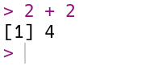
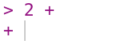

{kind=link}
3.14 * 3^2[1] 28.26After this lesson, you should be able to:
This chapter is an introduction the R programming language and programming in general. We explain how to write, run, and get help with R code. The examples, which are meant for following along, demonstrate several important programming concepts. We also introduce RStudio, an editor for R code, and explain how to how to install packages, R code developed by the community for anyone to use.
Code you write is reproducible: you can share it with someone else, and if they run it with the same inputs, they’ll get the same results. By writing code, you create an unambiguous record of every step taken in your analysis. This is one of the major advantages of programming languages over point-and-click software like Tableau or Microsoft Excel.
Another advantage of writing code is that it’s often reusable. This means you can:

R is a programming language for statistical computing and graphics. It provides a rich set of built-in tools for cleaning, exploring, modeling, and visualizing data.
The term “R” can mean the R language (the code) or the R interpreter (the software which runs the code). Most of the time, the meaning is clear from the context, but we’ll be explicit in cases where the distinction is important.
Compared to other programming languages, some of R’s particular strengths are its:
The main way you’ll interact with R is by writing R code or expressions. We’ll explain more soon, but first we need to install R and associated software.
To follow along with this and subsequent chapters, you’ll need a recent version of R.
Click here to download the R installer. When the download is complete, run the installer to install (or update) R on your computer. We recommend keeping the installer’s default settings.
In addition to R, you’ll need a recent version of RStudio. RStudio is an integrated development environment (IDE), which means it’s a comprehensive program for writing, editing, searching, and running code. You can do all of these things without RStudio, but RStudio makes the process easier.
Click here to download the free RStudio Desktop installer. When the download is complete, run the installer to install RStudio Deskop on your computer.
On Windows, you’ll also need to download and install RTools in order for some of the packages we’ll use later to work.
The first time you open RStudio, you’ll see a window divided into several panes, like this:
The console pane, on the left, is the main interface to R. If you type R code into the console and press the Enter key on your keyboard, R will run your code and return the result.
On the right are the environment pane and the plots pane. The environment pane shows data in your R workspace. The plots pane shows any plots you make, and also has tabs to browse your file system and to view R’s built-in help files. You’ll learn more about these gradually, but for now, focus on the console pane.
Let’s start by using R to do some arithmetic. In the console, you’ll see that the cursor is on a line that begins with >, called the prompt. You can make R compute the sum \(2 + 2\) by typing the code 2 + 2 after the prompt and then pressing the Enter key. Your code and the result from R should look like this:

R always puts the result on a separate line (or lines) from your code. In this case, the result begins with the tag [1], which is a hint from R that the result is a vector and that this line starts with the element at position 1. You’ll learn more about vectors in Section 3.1, and eventually learn about other data types that are displayed differently. The result of the sum, 4, is displayed after the tag.
If you enter an incomplete expression, R will change the prompt to +, then wait for you to type the rest of the expression and press the Enter key. Here’s what it looks like if you only enter 2 +:

You can finish entering the expression, or you can cancel it by pressing the Esc key (or Ctrl-c if you’re using R without RStudio). R can only tell an expression is incomplete if it’s missing something, like the second operand in 2 +. So if you mean to enter 2 + 2 but accidentally enter 2, which is a complete expression by itself, don’t expect R to read your mind and wait for more input!
Try out some other arithmetic in the R console. Besides + for addition, the other arithmetic operators are:
- for subtraction* for multiplication/ for division%% for remainder division (modulo)^ or ** for exponentiationYou can combine these and use parentheses to make more complicated expressions, just as you would when writing a mathematical expression. When R computes a result, it follows the standard order of operations: parentheses, exponentiation, multiplication, division, addition, and finally subtraction. For example, to estimate the area of a circle with radius 3, you can write:
3.14 * 3^2[1] 28.26You can write R expressions with any number of spaces (including none) around the operators and R will still compute the result.
Use spaces!
As with writing text, putting spaces in your code makes it easier for you and others to read, so it’s good to make it a habit. Put a single space on each side of most operators, after commas, and after keywords.
Since R is designed for mathematics and statistics, you might expect that it provides a better appoximation for \(\pi\) than 3.14. R and most other programming languages allow you to create named values, or variables. R provides a built-in variable called pi for the value of \(\pi\). You can display a variable’s value by entering its name in the console:
pi[1] 3.141593You can also use variables in expressions. For instance, here’s a more precise expression for the area of a circle with radius 3:
pi * 3^2[1] 28.27433You can create a variable with the assignment operator = by writing a name on the left-hand side and a value or expression on the right-hand side. For example, to save the area of the circle in a variable called area, you can write:
area = pi * 3^2You can use the arrow operator <- instead of the assignment operator:
area <- pi * 3^2In most cases, the two operators are interchangeable. For clarity, it’s best to choose one you like and use it consistently in all of your R code. In this reader, we use = because it’s the assignment operator in most programming languages and it’s easier to type.
In R, variable names can contain any combination of letters and dots (.). Names can also include numbers and underscores (_), but can’t start with a them. Spaces and other symbols are not allowed in variable names. So geese, top50.dogs, and nine_lives are valid variable names, but goose teeth, _fishes, and 9lives are not.
The main reason to use variables is to temporarily save results from expressions so that you can use them in other expressions. For instance, now you can use the area variable anywhere you want the area of the circle.
Notice that when you assign a result to a variable, R doesn’t automatically display that result. If you want to see the result as well, you have to enter the variable’s name as a separate expression:
area[1] 28.27433Another reason to use variables is to make an expression clearer and more general. For instance, you might want to compute the area of several circles with different radii. Then the expression pi * 3^2 is too specific. Instead, you can create a variable r, then rewrite the expression as pi * r^2. This makes the expression easier to understand, because the reader doesn’t have to intuit that 3 is the radius in the formula. Here’s the code to compute and display the area of a circle with radius 1 this way:
r = 1
area = pi * r^2
area[1] 3.141593Now if you want to compute the area for a different radius, all you have to do is change r and run the code again (R will not change area until you do this). Writing code that’s general enough to reuse across multiple problems can be a big time-saver in the long run. Later on, you’ll learn ways to make this code even easier to reuse.
Try to choose descriptive variable names, so that you and your collaborators can understand the meaning and purpose of each variable when reading the code.
R treats anything inside single or double quotes as literal text rather than as an expression to evaluate. In programming jargon, a piece of literal text is called a string. You can use whichever kind of quotes you prefer, but the quote at the beginning of the string must match the quote at the end.
'Hi'[1] "Hi""Hello!"[1] "Hello!"Numbers and strings are not the same thing, so for example R considers 1 different from "1". As a result, you can’t use strings with most of R’s arithmetic operators. For instance, this code causes an error:
"1" + 3Error in `"1" + 3`:
! non-numeric argument to binary operatorThe error message notes that + is not defined for non-numeric values.
R can do a lot more than just arithmetic. Most of R’s features are provided through functions, pieces of reusable code. You can think of a function as a machine that takes some inputs and uses them to produce some output. In programming jargon, the inputs to a function are called arguments, the output is called the return value, and when you use a function, you’re calling the function.
To call a function, write its name followed by parentheses. Put any arguments to the function inside the parentheses. For example, the function to round a number to a specified decimal place is named round. So you can round the number 8.153 to the nearest integer with this code:
round(8.153)[1] 8Many functions accept more than one argument. For instance, the round function accepts at least two arguments: the number to round and the number of decimal places to keep. When you call a function with multiple arguments, separate the arguments with commas. So to round 8.153 to 1 decimal place:
round(8.153, 1)[1] 8.2When you call a function, R assigns the arguments to the function’s parameter. Parameters are special variables that represent the inputs to a function and only exist while that function runs. For example, the round function has parameters x and digits. The next section, Section 1.4, explains how to look up the parameters of a function.
Some parameters have default arguments. A parameter is automatically assigned its default argument whenever the parameter’s argument is not specified explicitly. As a result, assigning arguments to these parameters is optional. For instance, the digits parameter of round has a default argument (round to the nearest integer), so it’s okay to call round without setting digits, as in round(8.153). In contrast, the x parameter doesn’t have a default argument. Section 1.4 explains how to look up the default arguments for a function.
By default, R assigns arguments to parameters based on their position. The first argument is assigned to the function’s first parameter, the second to the second, and so on. So in the code above, 8.153 is assigned to x and 1 is assigned to digits.
You can also assign arguments to parameters by name with = (not <-), overriding their positions. So some other ways you could write the call above are:
round(8.153, digits = 1)[1] 8.2round(x = 8.153, digits = 1)[1] 8.2round(digits = 1, x = 8.153)[1] 8.2All of these are equivalent. When you write code, choose whatever seems the clearest to you. Leaving parameter names out of calls saves typing, but including some or all of them can make the code easier to understand.
Parameters are not regular variables, and only exist while their associated function runs. You can’t set them before a call, nor can you access them after a call. So this code causes an error:
x = 4.755
round(digits = 2)Error in `round()`:
! argument "x" is missing, with no defaultIn the error message, R says that you forgot to assign an argument to the parameter x. You can keep the variable x and correct the call by making x an argument (for the parameter x):
round(x, digits = 2)[1] 4.76Or, written more explicitly:
round(x = x, digits = 2)[1] 4.76The point is that variables and parameters are distinct, even if they happen to have the same name. The variable x is not the same thing as the parameter x.
Learning and using a language is hard, so it’s important to know how to get help. The first place to look for help is R’s built-in documentation. In the console, you can access a specific help page by name with ? followed by the name of the page.
There are help pages for all of R’s built-in functions, usually with the same name as the function itself. So the code to open the help page for the round function is:
?roundFor functions, help pages usually include a brief description, a list of parameters, a description of the return value, and some examples. The help page for round shows that there are two parameters x and digits. It also says that digits = 0, meaning the default argument for digits is 0.
There are also help pages for other topics, such as built-in mathematical constants (such as ?pi), datasets (such as ?penguins), and operators. To look up the help page for an operator, put the operator’s name in single or double quotes. For example, this code opens the help page for the arithmetic operators:
?"+"It’s always okay to put quotes around the name of the page when you use ?, but they’re only required if it contains non-alphabetic characters. So ?sqrt, ?'sqrt', and ?"sqrt" all open the documentation for sqrt, the square root function.
Sometimes you might not know the name of the help page you want to look up. You can do a general search of R’s help pages with ?? followed by a string of search terms. For example, to get a list of all help pages related to linear models:
??"linear model"This search function doesn’t always work well, and it’s often more efficient to use an online search engine. When you search for help with R online, include “R” as a search term. Alternatively, you can use RSeek, which restricts the search to a selection of R-related websites.
As a programmer, sooner or later you’ll run some code and get an error message or result you didn’t expect. Don’t panic! Even experienced programmers make mistakes regularly, so learning how to diagnose and fix problems is vital.
Try going through these steps:
If none of these steps help, try asking online. Stack Overflow is a popular question and answer website for programmers. Before posting, make sure to read about how to ask a good question.
A package is a collection of functions for use in R. Packages usually include documentation, and can also contain examples, vignettes, and datasets. Most packages are developed by members of the R community, so quality varies. There are also a few packages that are built into R but provide extra features. We’ll use packages in many of the following chapters, so we’re learning about them now.
The Comprehensive R Archive Network, or CRAN, is the main place people publish packages. As of writing, there were 23,094 packages posted to CRAN. This number has been steadily increasing as R has grown in popularity.
Packages span a wide variety of topics and disciplines. There are packages related to statistics, social sciences, geography, genetics, physics, biology, pharmacology, economics, agriculture, and more. The best way to find packages is to search online, but the CRAN website also provides “task views” if you want to browse popular packages related to a specific discipline.
The install.packages function installs one or more packages from CRAN. Its first argument is a name or vector of names of packages to install.
When you run install.packages, R will ask you to choose which mirror to download the package from. A mirror is a web server that has the same set of files as some other server. Mirrors are used to make downloads faster and to provide redundancy so that if a server stops working, files are still available somewhere else. CRAN has dozens of mirrors; you should choose one that’s geographically nearby, since that usually produces the best download speeds. If you aren’t sure which mirror to choose, you can use the 0-Cloud mirror, which attempts to automatically choose a mirror near you.
As an example, here’s the code to install the remotes package:
install.packages("remotes")If you run the code above, you’ll be asked to select a mirror, and then see output that looks something like this:
--- Please select a CRAN mirror for use in this session ---
trying URL 'https://cloud.r-project.org/src/contrib/remotes_2.5.0.tar.gz'
Content type 'application/x-gzip' length 168405 bytes (164 KB)
==================================================
downloaded 164 KB
* installing *source* package ‘remotes’ ...
** package ‘remotes’ successfully unpacked and MD5 sums checked
** using staged installation
** R
** inst
** byte-compile and prepare package for lazy loading
** help
*** installing help indices
** building package indices
** installing vignettes
** testing if installed package can be loaded from temporary location
** testing if installed package can be loaded from final location
** testing if installed package keeps a record of temporary installation path
* DONE (remotes)
The downloaded source packages are in
‘/tmp/Rtmp8t6iGa/downloaded_packages’R goes through a variety of steps to install a package, even installing other packages that the package depends on. You can tell that a package installation succeeded by the final line DONE. When a package installation fails, R prints an error message explaining the problem instead.
Once a package is installed, it stays on your computer until you remove it or remove R. This means you only need to install each package once!
Most packages are periodically updated. You can update specific packages to the latest versions by reinstalling them with install.packages. Alternatively, you can update all of the R packages you’ve installed at once by calling the update.packages function. Beware that this may take a long time if you have a lot of packages installed.
The function to remove packages is remove.packages. Like install.packages, this function’s first argument is the packages to remove, as a character vector.
If you want to see which packages are installed, you can use the installed.packages function. It does not require any arguments. It returns a matrix with one row for each package and columns that contain a variety of information. Here’s an example:
packages = installed.packages()
# Just print the version numbers for 10 packages.
packages[1:10, "Version"]assertthat base base64enc boot bslib cachem cellranger
"0.2.1" "4.5.2" "0.1-6" "1.3-32" "0.10.0" "1.1.0" "1.1.0"
class cli cluster
"7.3-23" "3.6.5" "2.1.8.2" You’ll see a different set of packages, since you have a different computer.
Not all R packages are published to CRAN. GitHub is another popular place to publish R packages, especially ones that are experimental or still in development. Unlike CRAN, GitHub is a general-purpose website for publishing code written in any programming language, so it contains much more than just R packages and is not specifically R-focused.
The remotes package that we just installed provides functions to install packages from GitHub. It is generally better to install packages from CRAN when they are available there, since the versions on CRAN tend to be more stable and intended for a wide audience. However, if you want to install a package from GitHub, you can learn more about the remotes package by reading its online documentation.
Before you can use the functions (or other resources) in an installed package, you must load the package with the library function. R doesn’t load packages automatically because each package you load uses memory and may conflict with other packages. Thus you should only load the packages you need for whatever it is that you want to do. When you restart R, the loaded packages are cleared and you must again load any packages you want to use.
Let’s load the remotes package we installed earlier:
library("remotes")The library function works with or without quotes around the package name, so you may also see people write things like library(remotes). We recommend using quotes to make it unambiguous that you are not referring to a variable.
A handful of packages print out a message when loaded, but the vast majority do not. Thus you can assume the call to library was successful if nothing is printed. If something goes wrong while loading a package, R will print out an error message explaining the problem.
Occasionally, you might need to check the names and versions of the packages loaded in your R session. For instance, if you go to another R programmer for help, they’ll probably ask. You can make R print out information about the session, including loaded packages, with the sessionInfo function:
sessionInfo()R version 4.5.2 (2025-10-31)
Platform: x86_64-conda-linux-gnu
Running under: Arch Linux
Matrix products: default
BLAS/LAPACK: /home/nick/mill/datalab/teaching/adventures_in_data_science/.pixi/envs/default/lib/libopenblasp-r0.3.30.so; LAPACK version 3.12.0
locale:
[1] LC_CTYPE=en_US.UTF-8 LC_NUMERIC=C
[3] LC_TIME=en_US.UTF-8 LC_COLLATE=en_US.UTF-8
[5] LC_MONETARY=en_US.UTF-8 LC_MESSAGES=en_US.UTF-8
[7] LC_PAPER=en_US.UTF-8 LC_NAME=C
[9] LC_ADDRESS=C LC_TELEPHONE=C
[11] LC_MEASUREMENT=en_US.UTF-8 LC_IDENTIFICATION=C
time zone: US/Pacific
tzcode source: system (glibc)
attached base packages:
[1] stats graphics grDevices utils datasets methods base
other attached packages:
[1] remotes_2.5.0
loaded via a namespace (and not attached):
[1] compiler_4.5.2 tools_4.5.2The output from sessionInfo will be different on your computer, depending on your computer hardware, operating system, default language, time zone, version of R, and loaded packages.
For cleaning and analyzing data, we recommend the Tidyverse, a popular collection of packages for doing data science. Compared to R’s built-in functions, we’ve found that the functions in Tidyverse packages are generally easier to learn and use. They also provide additional features, such as robust handling of incorrectly-formatted files and better support for characters outside of the Latin alphabet.
Although they’re developed by many different members of the R community, Tidyverse packages follow a unified design philosophy, and thus have many interfaces and data structures in common. The packages provide convenient and efficient alternatives to built-in R functions for many tasks, including:
Think of the Tidyverse as a different dialect of R. Sometimes the syntax is different, and sometimes ideas are easier or harder to express concisely. As a consequence, the Tidyverse is sometimes polarizing in the R community. It’s useful to be literate in both base R and the Tidyverse, since both are popular.
One major advantage of the Tidyverse is that the packages are usually well-documented and provide lots of examples. Every package has a documentation website and the most popular ones also have cheatsheets.
In a string, an escape sequence or escape code consists of a backslash followed by one or more characters. Escape sequences make it possible to:
For example, the escape sequence \n corresponds to the newline character. There’s a complete list of escape sequences for R in the ?Quotes help file. Other programming languages also use escape sequences, and many of them are the same as in R.
newline. Then make R display the value of the variable by entering newline at the R prompt.message function prints output to the R console, so it’s one way you can make your R code report information as it runs. Use the message function to print newline.
1.3.4 Comments
In R and most other programming languages, you can mark parts of your code as comments: expressions to ignore rather than run. Use comments to plan, explain, and document your code. You can also temporarily “comment out” code to prevent it from running, which is often helpful for testing and debugging.
R comments begin with number sign
#and extend to the end of the line:R will ignore comments when you run your code.